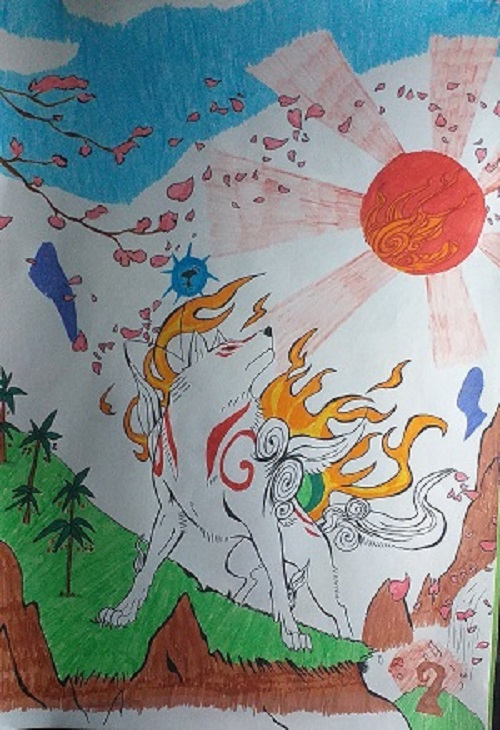

Sobre míMe llamo Brianna Nagisa Rosemary, llevo desde que era una renacuaja con mandos y teclados en mis manos y soy una creadora novata de contenido digital. ¿Qué incluye ésto? Pues incluye todo lo que un ordenador pueda hacer. Busco crear dibujos, modelos 3D y hasta programar páginas web y videojuegos. Mi gran plan es convertirme en una profesional. Estudio programación de forma autodidacta y estoy dispuesta a mejorar para trabajar de ello y hacer contenido de calidad. También escribo historias, que espero puedan convertirse en novelas vendidas al público o guiones de mis futuros proyectos. En el futuro espero crear varios videojuegos que gusten a la gente. Os mostraré de qué soy capaz ahora mismo. Si alguien tiene alguna duda o consulta, contactad conmigo a través de Instagram o Twitter. |
|
DibujosEmpiezo mostrando mis dibujos, no sólo los hechos por ordenador sino los hechos a mano y lápiz. Es cierto que dibujar no es mi fuerte, pero me esfuerzo en seguir intentándolo, porque tengo muchas ideas propias que quiero plasmar. Llevo tiempo practicando el dibujo digital, que me parece un poco más complicado de lo normal, pero sé que los resultados pueden ser más satisfactorios. El propio logo y el avatar de mi página están hechos por mí digitalmente.
Para ver más, visita mi Instagram. |

|

|
 |

|
HistoriasDetectives de lo InvisibleCapítulo 1Era una mañana neblinosa como tantas otras. Desde la ventana de su estudio, sentada en una silla de madera oscura y cuero negro, la detective Mary Anne Edevane miraba hacia los edificios que tenía enfrente. Veía la humedad en el cristal de la ventana condensarse, medio absorta en sus pensamientos. Tenía en sus manos un informe policial. Un caso que el cuerpo de policía de Londres no podía resolver y, como tantos otros, era encomendado a ella por su destreza y su ingenio. Muchos la comparaban con Sherlock Holmes y otros detectives ficticios, famosos por ser infalibles. Y ella también lo era. Al menos, hasta entonces. Ese caso le traía de cabeza. Miraba y miraba el manojo de papeles. Pasaba las páginas, observaba y analizaba cada palabra, cada frase, cada párrafo, hasta las anotaciones y bocetos improvisados por quien quiera que escribiera aquello. Aunque todo estaba muy bien detallado, había cosas que se le escapaban. Faltaban datos a su ecuación, la situación parecía imposible. Por una vez, Mary Anne no conseguía dar con la respuesta. LLevaba dos días enfrascada en lo mismo y estaba cansada de andar en un callejón sin salida. Lo único que la sacó de su bucle de hipótesis y dudas fue una serie de golpes suaves a la puerta del estudio, que aunque estaba abierta, quien llamaba prefería siempre avisar. |
Diseños 3DAlgo que se me da mejor que el dibujo 2D es el diseño y modelado 3D. Actualmente uso el programa Blender para crear y renderizar mis proyectos. Hasta el fondo de esta página web está hecho por mí en Blender. Actualmente son pocos mis proyectos en este programa porque acabo de empezar, pero pronto sacaré mucho más, incluyendo los futuros modelos que usaré en videojuegos bajo mi firma. Próximamente
Para ver mis animaciones completas, visita mi canal de YouTube. |


|
| ; |
Actualmente no tengo demasiados proyectos de páginas web, pero esta misma página la programé yo misma. Aún estoy comenzando a aprender diversos lenguajes de programación.
Mi intención es aprender y dominar todos esos lenguajes para poder programar páginas web, programas de ordenador, videojuegos, apps e incluso entrenar IAs.
Para ver más, visita mis proyectos en GitHub. |
Como ya he repetido, mi intención es trabajar como programadora de videojuegos. Actualmente ando aprendiendo sobre los lenguajes de programación necesarios para ello, pero ya cuento con los motores Unity y Godot, además de formas de aprender a usarlos. Próximamente vendrán proyectos realizados en estos motores.
Para estar al tanto de mis proyectos, seguidme en itch.io. 
Algo de lo que sí que no tengo idea alguna es de música. Necesitaría alguien con quien colaborar para aprovechar la ayuda para mis animaciones 3D y proyectos de videojuegos. ¡Necesito ayuda con la música, gente!
Sígueme en Patreon si quieres colaborar. Muchos proyectos pueden beneficiarse de la colaboración. ¡Toda ayuda es bienvenida!

Sígueme también en Twitter para más noticias y cosas relacionadas a todos mis proyectos.